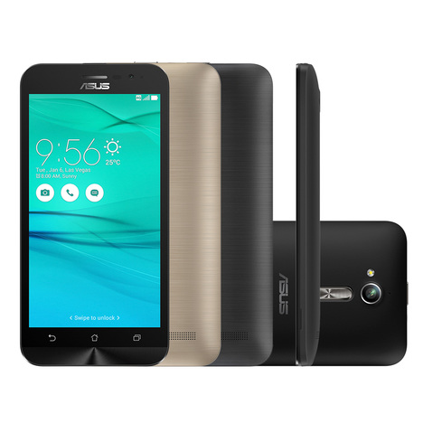
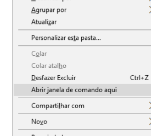

Instalar stock rom original de Fábrica Android 5.1.1 Lollipop para o Asus Zenfone GO ZB500KG

Procedimento de reinstalação de firmware, disponivel para o dispositivo "ASUS ZENFONE GO ZB500KG", voltando a versão original do sistema de forma rápida e sem nenhuma complicação. Com isso, problemas como: "Incapacidade de iniciar - Loop infinito, Travamentos, lentidões, Vírus - aplicativos instalam automaticamente - Propagandas excessivas, custom-recovery's e vários outros não irão mais o pertubarem.
Para esse tutorial você irá prescisar do ::
ADB Firmware para o Zenfone GO DriversA coversa está boa mas o que é bom mesmo é o tutorial, então, vamos lá!
- - Desligue o aparelho pois o iremos o por em modo ADB.
- Pressione ao mesmo tempo as teclas VOL - e POWER por aproximadamente 4s, quando apresentar o logo da ASUS solte a tecla POWER e continue pressionando a outra.
- Na tela recovery, com a tecla VOL- desça até APPLY UPDATE FROM ADB e confirme com a tecla POWER para habilitar o modo adb.
- Agora conecte o seu aparelho ao PC.
- Você Já deve ter baixado os 3 arquivos listados acima, no seu pc extraia os arquivos, "fastboot_adb_1.0.32_ASUS.rar" e instale os drivers USB.
- Passe o arquivo UL-ZB500KG_ASUS_X00BD-WW-12.0.0.0153-user.zip para a pasta onde estão os arquivos ADB que acabamos por extrair.
- Abra a pasta ADB e pressione as teclas SHIFT e a tecla direita do mouse então escolha "ABRIR JANELA DE COMANDOS AQUI" com isso o prompt de comando do Windows abrirá. 
- No prompt digite adb sideload UL-ZB500KG_ASUS_X00BD-WW-12.0.0.0153-user.zip e tecle ENTER com isso aguarde o processo de instalação terminar.
- # Você poderá renomear essa firmware para um mais curto se preferir, ex:: zenGO.zip, só não esqueça na hora de instala-lá inserir o novo nome ex:: adb sideload zenGO.zip blz?!.
- O processo de instalação da Firmware terá um tempo aproximado de 5 à 10 minutos.
- Após o processo de instalação ainda no recovery vá em Wipe data/factory reset e com a tecla de VOL- vá ate Yes -- delet all user data e confirme com a tecla POWER.
- Após tudo isso clique em reboot system now e aquarde seu Zen GO iniciar, Há, enquanto o mesmo não inicia, vá beber uma soda ~~ calor né?.
No Celular
No PC
Ficou com alguma dúvida? Obteve erro em algum dos procedimentos? Então fique livre a deixar seus comentários logo abaixo.